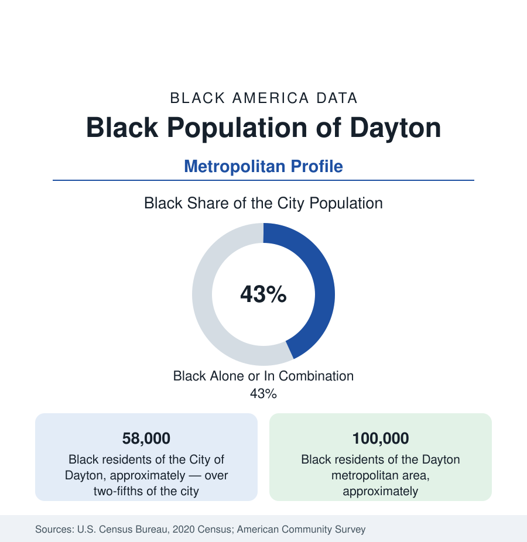

Black Cities
Black Dayton: The Funk Capital's West Side
Dayton holds about 58,000 Black residents in the city and 100,000 across the metro — the West Side that gave the world the Ohio Players. The census profile.

Dayton holds about 58,000 Black residents within the city — Black alone or in combination, over two-fifths of its 138,000 people — and about 100,000 across the metropolitan area. The Gem City's Black story is written in two registers: Paul Laurence Dunbar, America's first nationally celebrated Black poet, who lived and is buried here; and the funk — the Ohio Players, Slave, Heatwave, Lakeside, and Zapp all out of Dayton's West Side, a concentration of hit-making no city this size has matched, preserved now in the Funk Center's archive up in Trotwood.
The West Side: Dunbar's Streets and the Funk Corridors
The geography is famously divided by the river: the West Side — where the community was concentrated by the twentieth century's housing machinery — holds the historic body: the Dunbar district (the poet's house, a state memorial on Paul Laurence Dunbar Street, and Wright-Dunbar Village around the Wright brothers' print-shop world), the West Third Street corridor (the Black commercial spine, its Five Points and the old Palace Theatre ground), Residence Park, Wolf Creek, and the Edgemont and DeSoto Bass public housing file — up to Trotwood, the suburb that turned majority-Black across the late century, where the Funk Center (the Dayton Funk Museum's successor institution) keeps the music's archive. The East Side and the suburbs hold the counterpoints: Sinclair Community College downtown (among the nation's largest community colleges), Central State University — the HBCU — twenty minutes east in Wilberforce alongside Wilberforce University itself (1856, the oldest private HBCU), so the metro's higher-education data carry two Black institutions in one county pair. The segregation line the river drew is the city's honest map: west of it, the community; east of it, most of the region's wealth — a divide the fair-housing litigation of the bus era and the modern data both record.
Cash Registers, Airplanes, and the GM Goodbye
Dayton invented the cash register and commercial aviation, and its Black employment ran through the industrial century's Dayton plants: NCR's factories (the register giant's south campus), General Motors' Dayton constellation (Delco, Frigidaire, the Moraine assembly complex across the river suburbs), and Wright-Patterson Air Force Base east of the city — the metro's largest employer, the Air Force's research-and-logistics brain, its Black scientists, engineers, and civilians a professional tier the base's data sustain. The manufacturing collapse file is the shadow ledger: the GM closures of the 2000s (Moraine's 2008 shutdown, the documentary 'The Last Truck' as its archive) hit the West Side's union middle class at its foundation — the income and poverty series of the 2010s carry it — and the recovery data run through healthcare (Premier Health and the hospital systems), the base's growth, logistics along the I-70/75 crossroads, and the downtown and arcade revival's service tier. The indicators show a post-industrial spread: poverty concentrated west at rates among the state's starkest, homeownership in Trotwood and the western suburbs, and the opioid file's Dayton chapter (Montgomery County's overdose peak of the late 2010s, nationally reported, and its subsequent harm-reduction model) as the public-health overlay.
The Funk and the Poet: Dayton's Double Archive
The cultural data are disproportionate to the city's size in a way the profiles rarely match: Dunbar (whose 1896 breakthrough and Oak and Ivy / Lyrics of Lowly Life volumes made Dayton a literary dateline before the Wrights flew) and, eighty years on, the funk era — the West Side's bands stacking gold records through the 1970s on the Sugarfoot and Roger Troutman virtuosity the genre's histories center here. The Oregon District and the Riverscape mark the downtown revival; the National Afro-American Museum in Wilberforce (the federal museum of Black history for the region) and the Funk Center complete the institutional map. The political data show a two-fifths city electing Black mayors in the modern record (the office held by Black leadership across much of the recent era) and the county's commission politics following the west-side base.
Change and the Estimates
The estimates show the metro stabilized on the base and the logistics corridor — population near flat, the manufacturing wound scarred over in the series if not in memory — its Black population holding in count, Trotwood and the western suburbs maturing, and the current files running through the West Side's reinvestment plans (the Greater West Dayton plan's housing and corridor phases), the Arcade's reopening downtown, and the water crisis file of 2019's tornado outbreak (the Memorial Day tornadoes that cut through the West Side and Trotwood, its recovery data a standing disparity study).
Reading the Dayton Numbers
Dayton's 100,000 metro Black residents gave American letters its first Black national poet and American music its funkiest decade — from a West Side the region's economy built, abandoned, and is only now re-reading. The archive is outsized; so is the endurance that made it.
More in Black Cities
Black Atlanta: Population, Distribution, and Growth of a Black Metropolis
Metro Atlanta holds more than two million Black residents — roughly one in three, second only to New York. The suburban distribution, migration history, and composition of Black Atlanta in the census data.
Black New York: The Largest Black Population in America
The New York metropolitan area holds about 3.4 million Black residents — more than any metro in the nation — and the city itself about two million. The census profile.
Black Washington: The District and the Metro
The Washington metro holds about 1.6 million Black residents, and the District itself — long a majority-Black city — now records a Black share near 41 percent. The census profile.
Source: U.S. Census Bureau, 2020 Census; American Community Survey; Population Estimates Program.